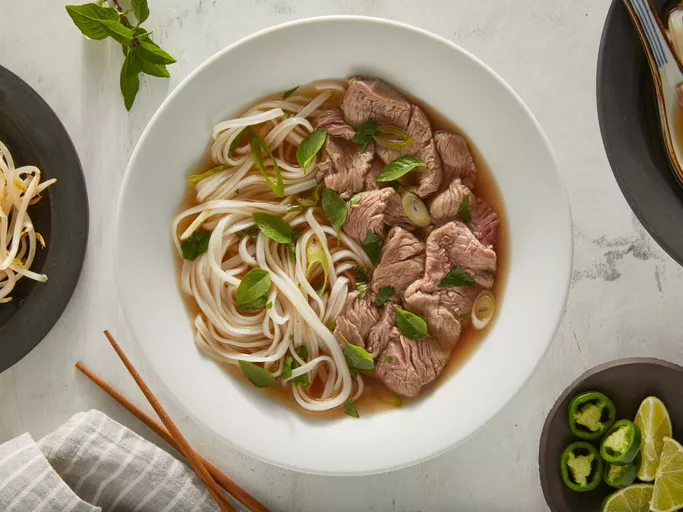

Home
Pho

Prep Time: 5 minutes
Cook Time: 15 minutes
Total Time: 20 minutes
Servings: 8 people
Description
When talking about Vietnamese cuisine, pho is typically one of the dish names that will pop up. Pho is a soup dish commonly found in Vietnam, consisting of rice noodles in bone broth with meat and garnish.
While the meat can vary, beef is a common choice, with beef slices, balls, brisket and more being possible ingredients. If you're looking for a warm, tasty soup to fill your stomach, do give this recipe a shot!
Ingredients
- 4 pounds beef soup bones (shank and knee)
- 1 medium onion, unpeeled and cut in half
- 5 slices fresh ginger
- 1 tablespoon salt
- 2 pods star anise
- 2 1/2 tablespoons fish sauce
- 4 quarts water
- 1 (8 ounce) package dried rice noodles
- 1 1/2 pounds beef top sirloin, thinly sliced
- 1/2 cup chopped cilantro
- 1 tablespoon chopped green onion
- 1 1/2 cups bean sprouts
- 1 bunch Thai basil
- 1 medium lime, cut into 4 wedges
- 1/4 cup hoisin sauce (Optional)
- 1/4 cup chile-garlic sauce (eg. Sriracha) (Optional)
Steps
- Preheat the oven to 220 degrees Celsius. Place beef bones on a baking sheet and roast in the preheated oven until browned (approx. 1 hour). Place onion halves on a second baking sheet and roast on another rack until blackened and soft (approx. 45 minutes).
- Transfer beef bones and onion halves to a large stockpot. Add ginger, salt, star anise, fish sauce and 4 quarts water then bring to a boil. Reduce heat to low, and simmer for 6 to 10 hours. Strain the broth into a saucepan and set aside.
- Place rice noodles in a large bowl filled with room temperature water. Let soak for 1 hour, then drain. When noodles have soaked for 1 hour, heat up the reserved broth by bringing it to a simmer.
- Bring a large pot of water to a boil, and cook the noodles in the boiling water for 1 minute.
- Drain noodles and divide them into 4 serving bowls, topped with sirloin, cilantro and green onion. Ladle hot broth over the top, then stir and let sit until beef is partially cooked and no longer pink (approx. 1 to 2 minutes). Serve with bean sprouts, Thai basil, lime wedges, hoisin sauce and chile-garlic sauce on the side.